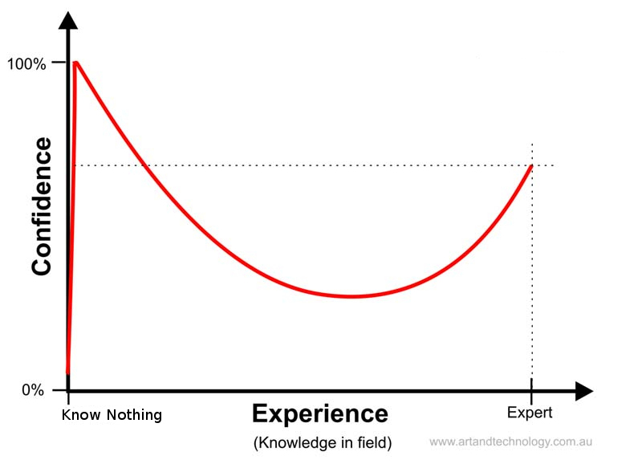

<!doctype html>
<html lang="en">
    <head>
        <meta charset="utf-8">
        <title>reveal-md</title>
        <link rel="stylesheet" href="css/reveal.css">
        <link rel="stylesheet" href="css/theme/black.css" id="theme">
        <!-- For syntax highlighting -->
        <link rel="stylesheet" href="lib/css/zenburn.css">

        <!-- If the query includes 'print-pdf', use the PDF print sheet -->
        <script>
          document.write( '<link rel="stylesheet" href="css/print/' + ( window.location.search.match( /print-pdf/gi ) ? 'pdf' : 'paper' ) + '.css" type="text/css" media="print">' );
        </script>
    </head>
    <body>

        <div class="reveal">
            <div class="slides"><section  data-markdown><script type="text/template"># Studium an der TF

<small>by Simon Selg, Danny Stoll</small>

</script></section><section ><section data-markdown><script type="text/template"><!-- .slide: data-background="./images/lookaway.gif" -->
## Lernen an der Uni
</script></section><section data-markdown><script type="text/template">
### Schlaf

- 7-8h
- [Auswirkung auf Leistung](https://en.wikipedia.org/wiki/Effects_of_sleep_deprivation_on_cognitive_performance)
- [Chronotypen](https://de.wikipedia.org/wiki/Chronobiologie#Chronotypen)

</script></section><section data-markdown><script type="text/template">
### Pensum

- Maximal 8h / Tag
- Pausen
- Ausgleich

</script></section><section data-markdown><script type="text/template">
### Lernweise

- Reorganisation vs Rechnen
- Lernen über langen Zeitraum


</script></section><section data-markdown><script type="text/template">
### Lernwerkzeuge

- Materialsichtung
- Fragenkatalog
- Cheatsheet
- Lerngruppe
- Kausurbedingungen

</script></section><section data-markdown><script type="text/template">
### Organisation/Kollaboration

- [Github](https://github.com/)
- [Google docs](https://www.google.com/intl/en/docs/about/)
- [Sharelatex](https://www.sharelatex.com/)
- Telegram/Jabber (Dateien)

</script></section></section><section ><section data-markdown><script type="text/template">
## Studium spezifisches
</script></section><section data-markdown><script type="text/template">
### Grundlagenstudium

- Inhalte der ersten Semester sind Grundlagen für restliche.
- Spätere Semester schwerer Stoff, einfacher gute Noten.
</script></section><section data-markdown><script type="text/template">
### Keine Regelstudienzeit


</script></section><section data-markdown><script type="text/template">
### Profs/Tutoren

- Menschen
- Bieten Interaktion an, wahrnehmen eure Aufgabe.

</script></section><section data-markdown><script type="text/template">
### Prüfungsleistung

- Studienleistung als Vorraussetzung
- Talent vs. Arbeit
</script></section><section data-markdown><script type="text/template">
### Klausureinsicht

- Gleich wichtig wie die Klausur selbst (!)
- Vertretung möglich

</script></section><section data-markdown><script type="text/template">
### Lernt English!

- Englisch reden
- Media: Filme/Serien
- Fachliteratur/Blogs
</script></section></section><section ><section data-markdown><script type="text/template">
## Psyche und Lifestyle
</script></section><section data-markdown><script type="text/template">
### Dunning Kruger Effekt



</script></section><section data-markdown><script type="text/template">
### Dunning Kruger Effekt

<iframe style="height: 60vh; width: 142vh;" width="560" height="315" src="https://www.youtube.com/embed/XyOHJa5Vj5Y" frameborder="0" allowfullscreen></iframe>

</script></section><section data-markdown><script type="text/template">
### Imposter Syndrome


</script></section><section data-markdown><script type="text/template">
### Was hätten Absolventen anders gemacht?

</script></section></section><section ><section data-markdown><script type="text/template">## Der TF Campus
</script></section><section data-markdown><script type="text/template">
### Mensa


</script></section><section data-markdown><script type="text/template">
### Räume


</script></section><section data-markdown><script type="text/template">
### Hausmeister


</script></section><section data-markdown><script type="text/template">
### Steckdosen


</script></section></section><section ><section data-markdown><script type="text/template">
## Tools & Resources
</script></section><section data-markdown><script type="text/template">
### LaTex

- [Detexify](http://detexify.kirelabs.org/classify.html)
- [Sharelatex](https://www.sharelatex.com/)

</script></section><section data-markdown><script type="text/template">
### Github Education Package

[](https://education.github.com/pack)

</script></section></section><section  data-markdown><script type="text/template">
## Quellen

- [#math #distracted](https://media.giphy.com/media/a8749TBnyEIY8/giphy.gif)
- [Motivation to study](http://weknowmemes.com/tag/motivation-to-study/)
- [Und dann habe ich gesagt](https://memegenerator.net/instance/60581519)
- [Person with mirror](http://bonnier.imgix.net/cdn-connect/fb1337e16b6348938dd45d2e54250ff2.jpg)
- [Disappointed person](http://cdn0.thevocket.com/content/uploads/2015/06/lelaki3.jpg)
- [Lageplan TF](http://www.uni-freiburg.de/universitaet/kontakt-und-wegweiser/lageplaene)
- [Hausmeister](http://de.scrubs.wikia.com/wiki/Hausmeister?file=Janitor.jpg)
- [Kid playing with power outlet](http://science.howstuffworks.com/science-vs-myth/what-if/finger-in-electrical-outlet.htm)
- [Labtocat](https://octodex.github.com/images/labtocat.png)
</script></section></div>
        </div>

        <script src="lib/js/head.min.js"></script>
        <script src="js/reveal.js"></script>

        <script>
            function extend() {
              var target = {};
              for (var i = 0; i < arguments.length; i++) {
                var source = arguments[i];
                for (var key in source) {
                  if (source.hasOwnProperty(key)) {
                    target[key] = source[key];
                  }
                }
              }
              return target;
            }

            // Optional libraries used to extend on reveal.js
            var deps = [
              { src: 'lib/js/classList.js', condition: function() { return !document.body.classList; } },
              { src: 'plugin/markdown/marked.js', condition: function() { return !!document.querySelector('[data-markdown]'); } },
              { src: 'plugin/markdown/markdown.js', condition: function() { return !!document.querySelector('[data-markdown]'); } },
              { src: 'plugin/highlight/highlight.js', async: true, callback: function() { hljs.initHighlightingOnLoad(); } },
              { src: 'plugin/notes/notes.js', async: true, condition: function() { return !!document.body.classList; } },
              { src: 'plugin/math/math.js', async: true },
              { src: 'plugin/math/math.js', async: true }
            ];

            // default options to init reveal.js
            var defaultOptions = {
              controls: true,
              progress: true,
              history: true,
              center: true,
              transition: 'default',
              dependencies: deps,
              math: {
                mathjax: 'https://cdn.mathjax.org/mathjax/latest/MathJax.js',
                config: 'TeX-AMS_HTML-full'
              }
            };

            // options from URL query string
            var queryOptions = Reveal.getQueryHash() || {};

            var options = {};
            options = extend(defaultOptions, options, queryOptions);
            Reveal.initialize(options);
        </script>

          <script src="/scripts/ti-presentation-ws-2016"></script>
    </body>
</html>
